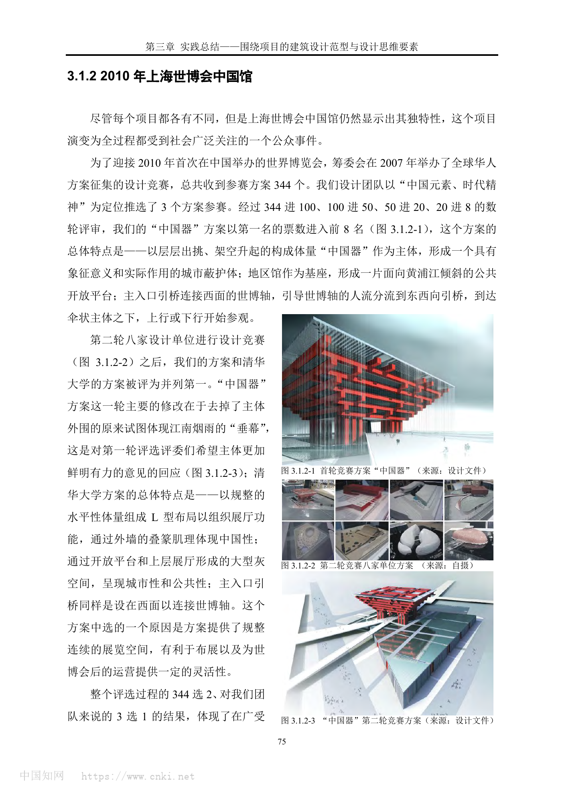
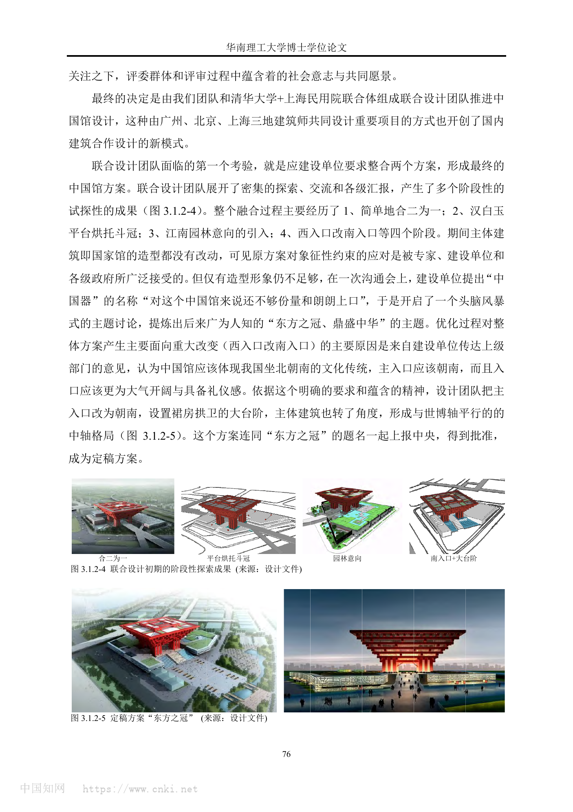
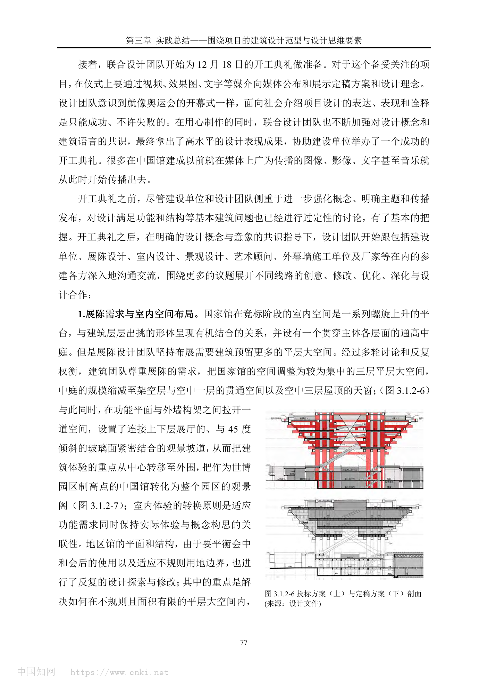
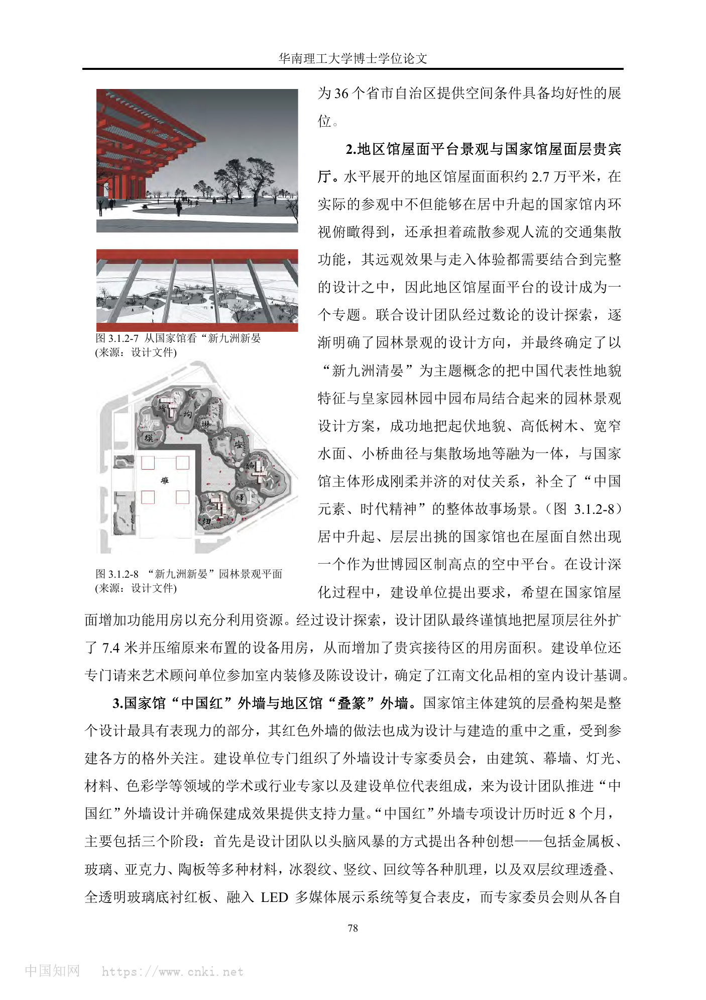
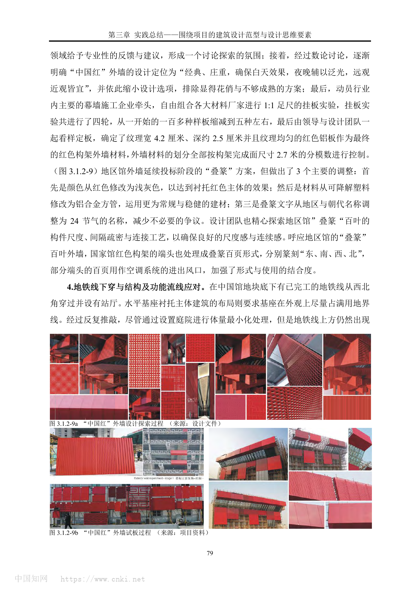
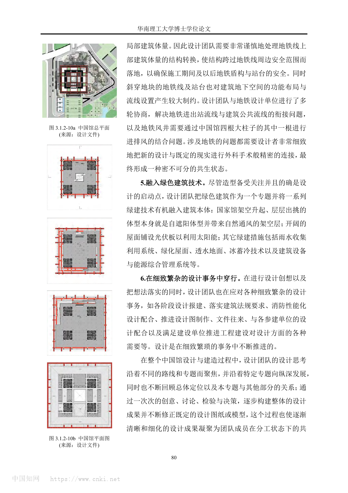

01
基本信息
| 项目名称 | 上海世博会中国馆 / 中国2010年上海世博会中国国家馆 |
|---|---|
| 建筑师 | 何镜堂团队 / 清华大学团队 / 上海民用建筑设计院 / 联合设计团队 |
| 地点 | 中国上海，上海世博园区，浦东上南路 205 号一带 |
| 年份 | 2007 竞赛与开工；2010 世博会使用；2012 改作中华艺术宫开放 |
| 类型 | Cultural / exposition pavilion / adaptive reuse |
| 功能 | 国家展馆、地区馆、文化展示、世博后再利用美术馆 |
| 状态 | 建成；世博会后保留并改作中华艺术宫 |
| 面积 | 160126 平方米 |
| 资料可信度 | high |
关键事实
02
项目概述与设计概念
中国馆把国家象征、世博大客流、展陈平层需求、屋顶园林、红色幕墙试板和地铁下穿约束组织成从概念到建造连续桥接的文化展示建筑。
资料中的概念
中国元素、时代精神；东方之冠、鼎盛中华。
综合判断
项目从“中国器”的器物原型转向“东方之冠”的国家礼仪表达，并通过南入口、大台阶、平层展厅、观景坡道、屋顶园林和幕墙试板把象征图像转化为完整建筑系统。
03
核心设计策略
公众事件中的方案整合
- 面对的问题
- 国家级世博展馆承载高社会期待，单一方案难以覆盖象征、功能和公共共识。
- 具体做法
- 通过竞赛、并列第一、联合设计和多轮汇报，把何镜堂团队方案与清华方案资源整合为定稿。
- 建筑效果
- 形成“东方之冠”的强传播主题，并建立跨地区合作设计模式。
- 证据
- sourced + synthesis
- 可迁移方法
- 重大公共项目要把社会共识转译为空间、入口、主题和建造专题。
南入口礼仪轴线
- 面对的问题
- 西入口连接世博轴有效，但国家馆正面性与礼仪感不足。
- 具体做法
- 将主入口改为南入口，设置大台阶和裙房拱卫，并形成与世博轴平行的中轴格局。
- 建筑效果
- 增强国家馆的仪式性和公共进入体验。
- 证据
- sourced
- 可迁移方法
- 入口策略应同时处理人流效率、文化方位和仪式性。
展陈需求倒逼剖面重组
- 面对的问题
- 螺旋上升平台和通高中庭概念强，但不利于展陈平层大空间需求。
- 具体做法
- 将国家馆调整为三层集中平层大空间，缩减中庭，并设置外围观景坡道。
- 建筑效果
- 保留展陈效率，同时把体验重心转向园区观景。
- 证据
- sourced
- 可迁移方法
- 功能调整可通过剖面和边界空间重组保留概念体验。
屋顶平台景观化
- 面对的问题
- 地区馆屋面既承担疏散集散，又被国家馆俯瞰，不能只是技术屋面。
- 具体做法
- 以“新九洲清晏”为主题整合地貌、水面、树木、桥径和集散场地。
- 建筑效果
- 屋顶平台成为可观看、可行走、可疏散的文化景观。
- 证据
- sourced
- 可迁移方法
- 大公共建筑屋顶可作为第二地面，兼容疏散、景观和叙事。
中国红外墙足尺试板
- 面对的问题
- 红色外墙需在远近、昼夜、灯光和施工尺度下保持经典庄重。
- 具体做法
- 组织专家委员会和幕墙企业进行四轮 1:1 挂板实验，最终确定红色铝板及 2.7 米分模数控制。
- 建筑效果
- 将颜色符号转化为可建造、可观看、可控制的幕墙系统。
- 证据
- sourced
- 可迁移方法
- 决定建筑识别度的表皮应通过样板、模数、灯光和观看距离共同定板。
04
场地关系
项目位于上海世博园区核心位置，西侧世博轴和南向礼仪入口共同影响入口组织。
地下既有地铁线从地块西北角穿过并设站厅，成为结构和流线的重要制约。
05
空间与流线
国家馆由竞标阶段的螺旋平台调整为三层平层大空间，外围观景坡道承担新的身体体验。
地区馆屋面被设计为“新九洲清晏”，同时承担疏散、集散、景观和文化叙事。
南入口大台阶和中轴格局强化国家馆的公共礼仪入口。
06
结构、材料与建造
国家馆中国红外墙最终采用纹理宽 4.2 厘米、深约 2.5 厘米的红色铝板，并按 2.7 米分模数控制。
地区馆叠篆外墙由浅灰铝合金方管构成，文字调整为二十四节气名称。
地铁线下穿要求地铁上部局部建筑体量通过结构转换跨越安全范围落地，并协调地铁公共流线和风井。
07
技术指标
| 场地面积 | ；未检索到稳定场地面积口径。（unknown） |
|---|---|
| 建筑面积 | 160126 平方米；Area 页面给出 gross floor area 160,126 m2。（reported） |
| 高度 | ；公开资料常见 63 米口径，但当前未保留为高可信技术指标。（limited） |
| 层数 | ；PDF 明确国家馆调整为较集中的三层平层大空间，但未提供完整楼层统计。（limited） |
| 容积率 | ；未检索到可靠资料。（unknown） |
| 建筑密度 | ；未检索到可靠资料。（unknown） |
| 结构体系 | ；PDF 提到地铁下穿导致结构转换并跨越安全范围落地，但未完整披露结构体系。（limited） |
| 业主 / 委托方 | ；PDF 提及建设单位，但当前包未稳定记录业主全称。（unknown） |
| 备注 | 高精度指标缺失处保持 limited 或 unknown，不作推测。 |
主要材料
红色铝板中国红外墙、浅灰铝合金方管叠篆百叶、玻璃、屋面光伏与绿化屋面等。
图纸与摄影信息
PDF 图注包含设计文件、项目资料；Area 页面图片注明 Shen Zhong Hai 摄影。
08
场地信息表
区位角色
Text
上海世博园区核心国家展馆，承担中国作为东道主国家的象征性展示。
Evidence Type
sourced
Source Ids
当前案例包暂未提供这一组结构化资料。
Related Image Ids
当前案例包暂未提供这一组结构化资料。
自然环境
Text
PDF 主要讨论园区、屋顶园林和绿色技术，未以自然地貌作为主要场地约束。
Evidence Type
missing
Source Ids
当前案例包暂未提供这一组结构化资料。
Related Image Ids
当前案例包暂未提供这一组结构化资料。
文化环境
Text
项目被要求体现中国元素、时代精神，并在定稿中强化坐北朝南、东方之冠、九洲园林等文化表达。
Evidence Type
sourced
Source Ids
当前案例包暂未提供这一组结构化资料。
Related Image Ids
当前案例包暂未提供这一组结构化资料。
地形条件
Text
地块地下有已建成地铁线和站厅下穿，构成关键工程约束。
Evidence Type
sourced
Source Ids
当前案例包暂未提供这一组结构化资料。
Related Image Ids
当前案例包暂未提供这一组结构化资料。
道路与进入
Text
主入口由西侧连接世博轴的方案改为南向入口和大台阶，形成礼仪轴线。
Evidence Type
sourced
Source Ids
当前案例包暂未提供这一组结构化资料。
Related Image Ids
当前案例包暂未提供这一组结构化资料。
周边建筑
Text
PDF 主要讨论世博轴、园区视角和国家馆作为制高点的观景关系，周边建筑细项未展开。
Evidence Type
missing
Source Ids
当前案例包暂未提供这一组结构化资料。
Related Image Ids
当前案例包暂未提供这一组结构化资料。
服务人群
Text
世博会期间服务大客流参观者、国家馆和地区馆观众；后续服务中华艺术宫观众。
Evidence Type
sourced
Source Ids
当前案例包暂未提供这一组结构化资料。
Related Image Ids
当前案例包暂未提供这一组结构化资料。
场地核心矛盾
Text
核心矛盾是国家象征、超大客流、展陈灵活性、礼仪入口、地下地铁和永久保留之间的综合协调。
Evidence Type
synthesis
Source Ids
当前案例包暂未提供这一组结构化资料。
Related Image Ids
当前案例包暂未提供这一组结构化资料。
09
概念创意探索
诊断
中国馆从竞赛开始就是受到社会广泛关注的公众事件，设计需组织社会共同愿景。
定位
从“中国元素、时代精神”到“东方之冠、鼎盛中华”，项目定位从器物原型转向国家礼仪表达。
策略
以国家馆主体象征形体为核心，地区馆作为基座与公共平台，南入口和屋顶园林补足公共体验。
意象与表达
建筑意象由冠、鼎、斗拱、中国红、叠篆、九洲园林和南向礼仪入口共同构成。
10
建筑语言生成
功能梳理
展陈需求推动国家馆由螺旋平台调整为三层平层大空间，地区馆需为 36 个省市自治区提供均好展位。
布局逻辑
布局由南入口礼仪轴线、水平地区馆基座和居中升起的国家馆主体构成。
形体构成
国家馆层层出挑、架空升起，地区馆水平展开，形成上部强象征与下部公共平台的组合。
场所与氛围
新九洲清晏将地区馆屋顶从疏散平台转化为可观看、可行走的文化景观。
11
建造品质控制
建造语言
地铁线下穿使地铁上部局部建筑体量必须通过结构转换跨越安全范围落地。
材料与工艺
中国红外墙专项历时近 8 个月，经历多材料、多肌理、四轮 1:1 挂板实验。
构造逻辑
地区馆叠篆百叶和国家馆构架端头将文字、遮蔽、通风、尺度和文化表达整合为外墙构件。
物理性能与施工控制
架空升起和层层出挑形成自遮阳与自然通风架空层，屋面光伏、雨水收集、绿化屋面、透水地面、冰蓄冷和能管系统被整合进建筑。
12
核心方法提炼
可迁移方法
重大公共建筑要把社会共同愿景组织为空间、入口、主题和建造专题。
展陈建筑可通过剖面重组同时满足平层展陈和可记忆的参观体验。
决定识别度的颜色和表皮应通过 1:1 样板、模数、灯光和观看距离验证。
不宜直接照抄
东方之冠、中国红、斗冠/斗拱等符号高度绑定世博国家馆语境，不适合在普通文化建筑中直接套用。
可转化的分析图
- 竞赛整合流程图
- 南入口礼仪轴线图
- 国家馆剖面调整图
- 屋顶平台复合功能图
- 中国红外墙试板决策图
- 地铁下穿与结构跨越关系图
13
图片资料







14
参考来源与信息缺口
- 上海世博会中国馆.pdflevel_a用户提供 PDF / 博士论文项目实践章节
主要项目资料，包含竞赛、整合、剖面、外墙、地铁、绿色技术和建成照片。
- 中华艺术宫官方网站level_a中华艺术宫（上海美术馆）
用于确认中国馆后续作为中华艺术宫使用。
- China Pavilionlevel_bArea
专业建筑媒体，用于补充建筑面积、摄影信息和项目事实。
- China Pavillion for Shanghai World Expo 2010level_bArchDaily
专业建筑媒体，题名使用 Pavillion 拼写；用于补充项目传播与建造期信息。
- gooood Interview NO.17 – He Jingtanglevel_bgooood
何镜堂访谈页面，含中国馆图片和设计院线索；非完整项目报道。
- 上海世博会中国馆变身中华艺术宫level_c中国青年报
用于补充世博会后改作中华艺术宫的公开报道。
信息缺口与冲突
- English title spelling：ArchDaily 页面题名写作 China Pavillion，更常见英文写作为 China Pavilion；本包标题使用 Pavilion，来源列表保留原题。
- Height：公开资料常见 63 米口径，但当前包未找到可直接对应设计图纸或官方技术表的一手高度资料，故不确认为高可信指标。
- Structure system：PDF 仅说明地铁下穿处结构转换、风井和大柱结合等问题，未完整披露主体结构系统和节点做法。
- Post-Expo adaptation：中华艺术宫后续使用可确认，但改造阶段的内部空间变更和长期运营评价未在本包中展开。